第 19 章通过积分计算面积
积分计算的一个用途是帮助我们确定由曲线围成的面积的值。
让我们一点一点地进入这个主题。
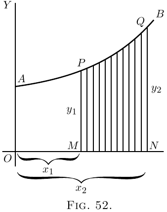
设 \(AB\)（参见图52）是一条已知方程的曲线，即曲线上的 \(y\) 是 \(x\) 的某个已知函数。取曲线上从点 \(P\) 到点 \(Q\) 的一段。
从点 \(P\) 垂直向下作 \(PM\)，从点 \(Q\) 垂直向下作 \(QN\)。令 \(OM = x_1\)，\(ON = x_2\)，并令纵坐标 \(PM = y_1\) 和 \(QN = y_2\)。这样，我们标出了位于曲线段 \(PQ\) 下方的区域 \(PQNM\)。问题是：如何计算这个面积的值？
解决这一问题的关键在于将面积设想为被分成许多窄条，每条的宽度为 \(dx\)。\(dx\) 越小，这样的条数在 \(x_1\) 和 \(x_2\) 之间就越多。显然，总面积等于所有这些窄条面积的总和。因此，我们的任务是找出任何一条窄条的面积表达式，然后通过积分将所有窄条加在一起。现在，考虑任意一条窄条，它的形状如下：它的两侧是两条垂直线，底边是 \(dx\)，顶部是略微弯曲的斜边。
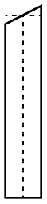
假设其平均高度为 \(y\)；那么，由于宽度为 \(dx\)，其面积将为 \(y dx\)。我们可以将 \(dx\) 取得足够小，其平均高度可以视为该窄条中间位置的高度。现在，我们设整个面积的未知值为 \(S\)，表示“面积”。一个窄条的面积只是整个面积的一部分，因此可以记为 \(dS\)。于是窄条的面积可以写成
如果将所有窄条加起来，则总面积为
因此，求 \(S\) 的关键是能否针对具体情况，计算 \(y \cdot dx\) 的积分，其中 \(y\) 是 \(x\) 的函数。
例如，如果已知曲线的方程为 \(y = b + ax^2\)，我们可以将此代入表达式，得出 \(\int (b + ax^2) dx\)
这没什么问题，但稍加思考可以发现，还需要更多的步骤。因为我们所求的面积并非整个曲线下方的面积，而是从 \(PM\) 左边到 \(QN\) 右边之间的部分面积。因此，必须对面积的边界做出限制。
这就引入了一个新概念，即定积分。我们假设 \(x\) 是变化的，而在当前情况下，我们不需要 \(x\) 小于 \(x_1\)（即 \(OM\)）或大于 \(x_2\)（即 \(ON\)）的值。当积分限定在两个边界之间时，我们称较小的边界值为下限，较大的边界值为上限。这种带有边界的积分称为定积分，以区别于没有边界的不定积分。
在表示积分的符号中，边界通过在积分号的上下标注明。例如：
表示：求 \(y \cdot dx\) 在下限 \(x_1\) 和上限 \(x_2\) 之间的积分。
有时更简单地写成：
接下来，如何根据给出的指令求定积分？
再次参考图52。假设我们能够求出从 \(A\) 到 \(Q\) 的较大曲线段（从 \(x = 0\) 到 \(x = x_2\)）下方的面积，记为 \(AQNO\) 的面积。然后，再求出从 \(A\) 到 \(P\) 的较小曲线段（从 \(x = 0\) 到 \(x = x_1\)）下方的面积，记为 \(APMO\) 的面积。如果用较大的面积减去较小的面积，剩下的就是我们所需要的 \(PQNM\) 的面积。这正是我们的思路；定积分在两个边界之间的值是积分在上限的值与积分在下限的值之差。
让我们继续。首先求不定积分：
而曲线的方程为 \(y = b + ax^2\)（参见图52）：
是我们需要求解的不定积分。
通过积分规则，可以得出：
这表示从 \(0\) 到任意 \(x\) 的面积。
因此，上限 \(x_2\) 对应的面积为：
下限 \(x_1\) 对应的面积为：
用较大的面积减去较小的面积，得到区域 \(S\) 的值为：
这就是我们需要的答案。让我们代入一些数值：假设 \(b = 10\)，\(a = 0.06\)，\(x_2 = 8\) 和 \(x_1 = 6\)。则面积 \(S\) 为：
我们用符号化的方式总结关于积分限的结论：
其中 \(y_2\) 是与 \(x_2\) 对应的 \(y , dx\) 的积分值，\(y_1\) 是与 \(x_1\) 对应的积分值。
所有在界限之间的积分都需要通过找到两个值之间的差值来完成。此外，请注意，在进行减法时，添加的常数 \(C\) 会自动消失。
例子
(1) 为了熟悉这一过程，我们从一个已知答案的例子开始。求一个三角形的面积（参见图53），其底边为 \(x = 12\)，高为 \(y = 4\)。根据几何学基本知识，答案应为 \(24\)。
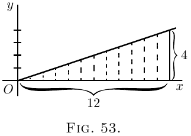
在此，所谓的“曲线”是一条斜直线，其方程为 \(y = \frac{x}{3}\)
需要计算的面积为：
对 \(\frac{x}{3} dx\) 进行积分，并将积分的值用方括号表示，同时标记上限和下限，我们得到：
为验证这种计算方法，我们通过一个简单的例子进行测试。在方格纸上绘制曲线 \(y = \frac{x}{3}\) 的图形。
该方程的取值如下所示：
| \(x\) | \(0\) | \(3\) | \(6\) | \(9\) | \(12\) |
|---|---|---|---|---|---|
| \(y\) | \(0\) | \(1\) | \(2\) | \(3\) | \(4\) |
将图形绘制在图54中。
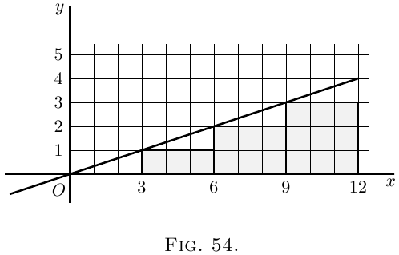
然后，通过数方格的方式计算从 \(x = 0\) 到 \(x = 12\) 的曲线下方面积。共计 \(18\) 个完整的方格和 \(4\) 个三角形，每个三角形的面积为 \(1 \frac{1}{2}\) 个方格，总计 \(24\) 个方格。因此，积分 \(\dfrac{x}{3} dx\) 在下限 \(x = 0\) 和上限 \(x = 12\) 之间的数值为 \(24\)。
进一步练习：证明该积分在 \(x = 3\) 和 \(x = 15\) 之间的值为 \(36\)。
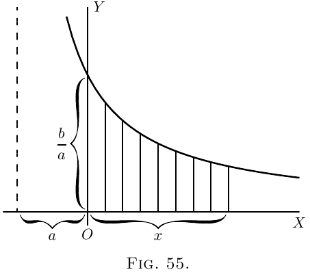
(2) 求曲线 \(y = \dfrac{b}{x + a}\) 在 \(x = x_1\) 到 \(x = 0\) 之间的面积。
注意：在处理定积分时，常数 \(C\) 总是会通过减法消失。
这种通过减去一部分来求差值的方法实际上很常见。例如，如何求一个平面环的面积（参见图56），其外径为 \(r_2\)，内径为 \(r_1\)？根据几何学，外圆的面积为 \(\pi r_2^2\)，内圆的面积为 \(\pi r_1^2\)。用外圆面积减去内圆面积，得环的面积：
= 环的平均周长 × 环宽度。
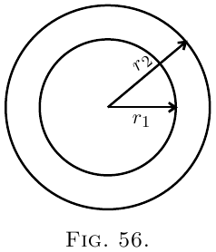
(3) 再举一个例子：衰减曲线。求曲线在 \(x = 0\) 到 \(x = a\) 之间的面积，曲线方程为（见图57）：
积分计算如下：
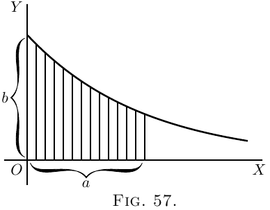
(4) 另一个例子是理想气体的绝热线，其方程为 \(pv^n = c\)，其中 \(p\) 为压力，\(v\) 为体积，\(n\) 的值为 \(1.42\)（参见图58）。
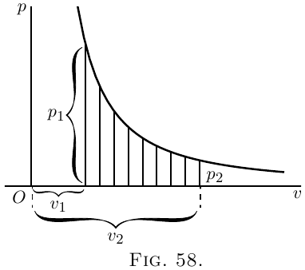
求从体积 \(v_2\) 到 \(v_1\) 的曲线下方面积（此面积与压缩气体所做功成正比）。
方程为：
练习
证明普通几何公式：半径为 \(R\) 的圆的面积 \(A\) 等于 \(\pi R^2\)。
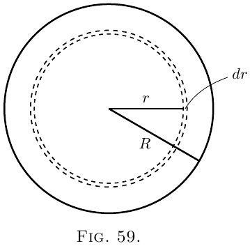
考虑圆面上的一个窄带或环形带（参见图59），其宽度为 \(dr\)，距离圆心的距离为 \(r\)。可以将整个圆面看作由这样窄的环形带组成，整个面积 \(A\) 就是从圆心到边缘的所有这些窄带的积分，即积分范围从 \(r=0\) 到 \(r=R\)。
我们需要找到窄带的微小面积 \(dA\) 的表达式。可以将它看作一个宽度为 \(dr\)、长度为周长 \(2 \pi r\) 的窄条。因此，这个窄带的面积为：
因此，整个圆的面积为：
现在，对 \(r · dr\) 的积分结果是 \(\frac{1}{2} r^2\)。所以：
另一个练习
求曲线 \(y = x - x^2\) 的正部分的平均纵坐标，曲线如图60所示。为了求平均纵坐标，我们需要先求出区域 \(OMN\) 的面积，然后除以底边 \(ON\) 的长度。但在求面积之前，我们需要确定底边的长度，即积分的上限。在点 \(N\) 处，纵坐标 \(y=0\)。因此，我们查看方程，找出使 \(y=0\) 的 \(x\) 值。显然，当 \(x=0\) 时，\(y=0\)，曲线经过原点 \(O\)；另外，当 \(x=1\) 时，\(y=0\)，因此 \(x=1\) 是点 \(N\) 的位置。
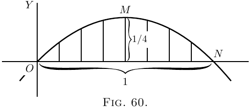
需要的面积为：
但底边的长度为 \(1\)。
因此，曲线的平均纵坐标为 \(= \frac{1}{6}\)。
【注：通过微分求极值，验证曲线最大纵坐标的高度是一个简单而有趣的练习，这一高度必定大于平均值。】
对于任意曲线，其在 \(x=0\) 到 \(x=x_1\) 范围内的平均纵坐标为：
还可用同样的方法求解旋转体表面积。
例子将曲线 \(y = x^2 - 5\) 绕 \(x\) 轴旋转。求该曲线在 \(x=0\) 到 \(x=6\) 之间生成的表面积。
曲线上一点的纵坐标为 \(y\)，绕轴旋转形成的圆周长度为 \(2\pi y\)。宽度为 \(dx\) 的窄条带所生成的表面积为 \(2\pi y dx\)。总表面积为：
极坐标中的面积
当一个区域的边界方程用点到固定点 \(O\)（称为极点）的距离 \(r\) 和 \(r\) 与正水平轴 \(OX\) 的夹角 \(\theta\) 表示（见图61），上述方法可以稍作修改后同样适用。此时，我们不再考虑窄条面积，而是将区域视为由许多小三角形 \(OAB\) 组成，其中 \(O\) 点的角度为 \(d\theta\)。我们将所有这些小三角形的面积加总，得到所需的区域面积。
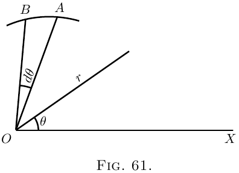
一个小三角形的面积近似为 \(\frac{AB}{2} × r\) 或 \(\frac{r d\theta}{2} × r\)。因此，在曲线和两条半径 \(r\) 的位置 \(\theta_1\) 和 \(\theta_2\) 之间包含的区域面积为：
例子
(1) 求半径为 \(a\) 厘米的圆的 \(1\) 弧度扇形面积。
显然，圆的极坐标方程为 \(r = a\)。该扇形面积为：
(2) 求曲线 \(r = a(1+\cos \theta)\)（称为“帕斯卡蜗线”）第一象限的面积。
通过积分求体积
对于面积计算中的小窄条带面积，我们也可以用类似方法处理固体的体积。通过将组成固体的所有小薄层体积相加，我们可以求得总的体积，就像之前通过小面积片的加总得到图形的总面积一样。
例子
(1) 求半径为 \(r\) 的球体积。
一个薄球壳的体积为 \(4\pi x^2 dx\)（见图59）。将构成球体的所有同心球壳体积相加，得到：
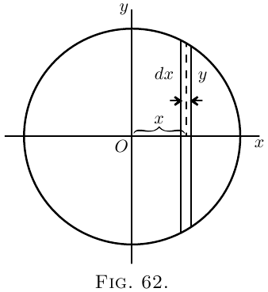
或者，用另一种方法：一个厚度为 \(dx\) 的球片体积为 \(\pi y^2 , dx\)（见图62），其中 \(x\) 和 \(y\) 的关系为 \(y^2 = r^2 - x^2\)。
因此：
(2) 求曲线 \(y^2 = 6x\) 绕 \(x\) 轴旋转，在 \(x=0\) 和 \(x=4\) 之间生成的体积。
该旋转体的薄层体积为 \(\pi y^2 dx\)。
关于二次均值
在某些物理领域（特别是交流电流研究）中，需要计算变量的二次均值。所谓二次均值，是指在给定范围内取变量平方的平均值的平方根。二次均值的其他名称包括“虚值”或“均方根”（r.m.s., root-mean-square）。如果函数为 \(y\)，二次均值在 \(x=0\) 到 \(x=l\) 的范围内，则表示为：
例子
(1) 求函数 \(y = ax\) 的二次均值（见图63）。
积分为
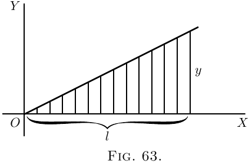
除以 \(l\) 并开平方根：
算术均值为 \(\frac{1}{2}al\)，二次均值与算术均值的比值（称为形状因子）为：
(2) 求函数 \(y = x^a\) 的二次均值。
积分为
(3) 求函数 \(y = a^{\frac{x}{2}}\) 的二次均值。
积分为
因此二次均值为